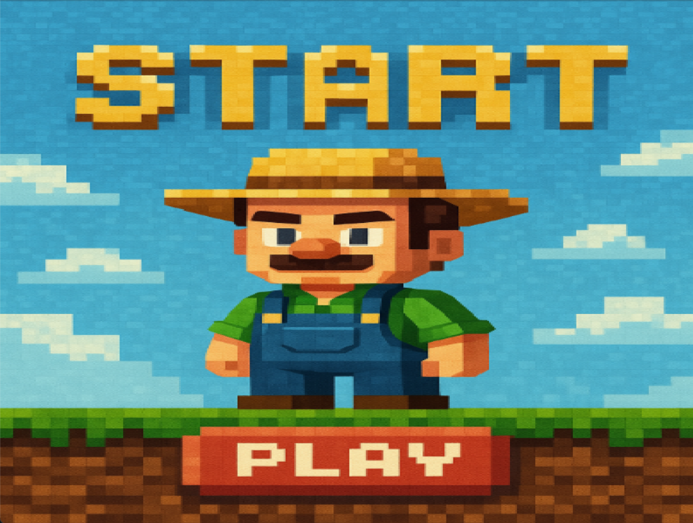

Omar ElMekataf
Engineering Bachelors in Applied Mechatronics Systems • Human • Never asked for this
This page will be about the pygame project I made during the first semester:
Central City
The story takes place in a fictional world where a farmer designs a city that accomodate and unite all magical creatures. He pitches the idea to the princess, but before they could sign a deal, an evil sorceror kidnaps the princess and imprsons her in an enchanted maze protected by riddles. In order to accomplish his goal, our hero has to save the princess.
